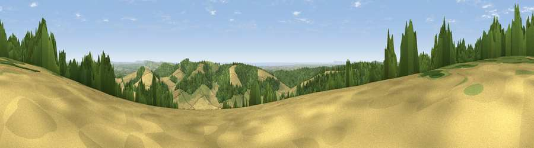

Littleton Down
#1996 in England · top 6% of its area beats it · near DunctonThe view, rendered

A 360° render of this exact spot computed from the terrain model, tree cover and land cover — summer colours, afternoon light, calibrated against photographs of famous viewpoints. Real trees, hedges and buildings will differ in detail.
The panorama
Grey silhouette: terrain skyline in each direction (720 bearings, Earth curvature and refraction included). Dashed green: skyline with trees (+15 m) and buildings (+8 m) as obstacles. Blue strip: how far the ground is visible on each bearing.
Where the view opens
Wedge length = distance to the farthest visible ground on that bearing (vegetation-aware). Rings at 10, 25 and 50 km.
What fills the view
42% woodland · 28% cropland · 26% grassland · 3% water ·
Angular shares of the visible panorama (visual magnitude), not map area. Landscape diversity 0.53 (0–1 Shannon).
Key numbers
More beautiful places nearby
The staircase of upgrades: each row has a higher view potential than everything closer. Driving times are estimates from straight-line distance, calibrated against real road routing — check an actual route before setting out.
| Place | Direction | Drive | Score |
|---|---|---|---|
| Barlavington Down | ENE · 2 km | ~6 min | 77.3 |
| Viewpoint near Bignor | SE · 2 km | ~6 min | 82.1 |
| Glatting Beacon | SE · 3 km | ~8 min | 84.3 |
| Bignor Hill | ESE · 4 km | ~10 min | 84.4 |
| Linch Down | WNW · 10 km | ~19 min | 85.2 |
| Beacon Hill | WNW · 14 km | ~25 min | 85.8 |
| Chanctonbury Ring | E · 20 km | ~34 min | 87.0 |
| Viewpoint near St. Lawrence | SW · 55 km | ~76 min | 88.2 |
50.92565, -0.66178 · source: dobih hill · position refined by local search. Computed location — check access rights before visiting.